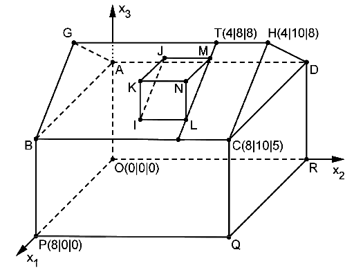

A house¶
Problem
The figure displays exemplarily a family home erected on a horizontal surface. On one of the rectangular roof surfaces, a dormer shall be erected. The points \(A\), \(B\), \(C\), \(D\), \(O\), \(P\), \(Q\) and \(R\) are vertices of a cuboid. The straight triangular prism \(LMNIJK\) represents the dormer while the straight line \([GH]\) represents the roof ridge, i.e. the upper horizontal edge of the roof. A length unit in the coordinate system corresponds to 1 m, i.e., the house has a length of 10 m.
Calculate the area of the roof surface represented in the model by the rectangle \(BCHG\).
In the town where the family home is located, a charter for the erection of dormers exists which has to be abided by every constructor. This charter allows the erection of a dormer provided the inclination of the roof surface of the respective roof against the horizonal is at least 35°. Demonstrate by means of a calculation that for the family home under consideration, the erection of a dormer is permissible.
Within the model, the roof on which the dormer is to be erected lies in the plane
The dormer shall be erected in such a way that its distance from the lateral edge of the roof surface represented in the model by the line \(HC\) equals 2 m while its distance from the roof ridge is 1 m. In order to obtain the coordinates of point \(M\), the straight line
going through point \(T(4|8|8)\) is considered.
Justify that \(t\) lies in the plane \(E\) and is situated at a distance 2 from the straight line \(HC\).
Now, a point \(M\) is determined on the straight line \(t\) such that the distance between dormer and roof ridge is 1 m. Determine the coordinates of \(M\).
(Result: \(M(4.8|8|7.4)\) )
The points \(M\) and \(N\) lie on the straight line
which in the model determines the inclination of the roof surface of the dormer. The line \([NL]\) parallel to the \(x_3\) axis within the model represents the height of the dormer which shall be 1.4 m. In order to determine the coordinates of \(N\) und \(L\), the plane \(F\) obtained by shifting \(E\) by 1.4 in the positive \(x_3\) direction is considered.
Justify that \(3x_1+4x_3-49.6=0\) is an equation describing \(F\).
Determine the coordinates of \(N\) and \(L\).
(Partial result: \(N(7.2|8|7)\) )
Solution of part a
The area of a rectangle is obtained as a product of length and width:
From the figure, we determine the points \(B(8|0|5)\) and \(G(4|0|8)\). Together with \(C(8|10|5)\) we obtain
The area thus amounts to 50m².
In Sage, we first define all points and then check the result.
Solution of part b
The angle between two vectors \(\vec{a}\) and \(\vec{b}\) can be calculated by means of the cosine rule:
By means of this formula, Sage yields a value of about \(37^\circ\). The house thus is in accordance with the charter.
Solution of part c
We insert the straight line \(t\) into the equation for the plane:
\(t\) thus lies in the plane. The straight line
obviously is parallel to \(t\). The distance between \(t\) and \(HC\) equals the distance between the points \(T\) and \(H\):
This result is confirmed by Sage:
Solution of part d
The distance of a point given by \(\lambda\) from the point \(T\) ist determined by
For \(\lambda=\pm\frac{1}{5}\) the distance equals 1. This result is confirmed by Sage.
However, only the positive solution for \(\lambda\) makes sense, because the other point is situated above the roof ridge. Thus we obtain the point \(M(4.8|8|7.4)\).
Solution of part e
Shifting \(E\) by 1.4 in the positive \(x_3\) direction, the equation of the plane is rewritten as:
Solution of part f
Inserting the equation for the straight line \(m\) into the equation for the plane \(F\) yields
By insertion into the equation for the straight line \(m\), one obtains the point \(N(7.2|8|7)\), and by shifting by \(-1.4\) in the \(x_3\) direction the point \(L(7.2|8|5.6)\) is found. These results are obtained by means of Sage as follows: